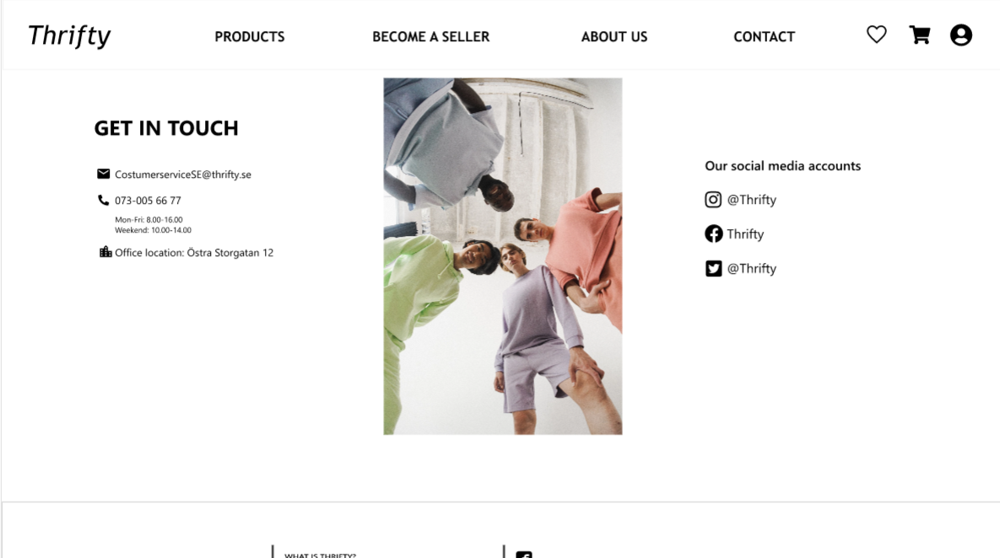
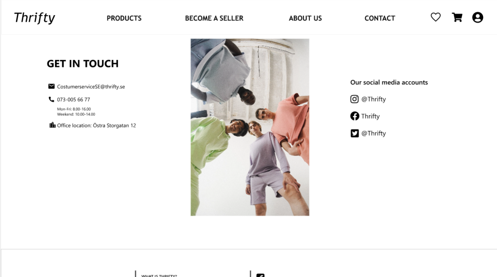
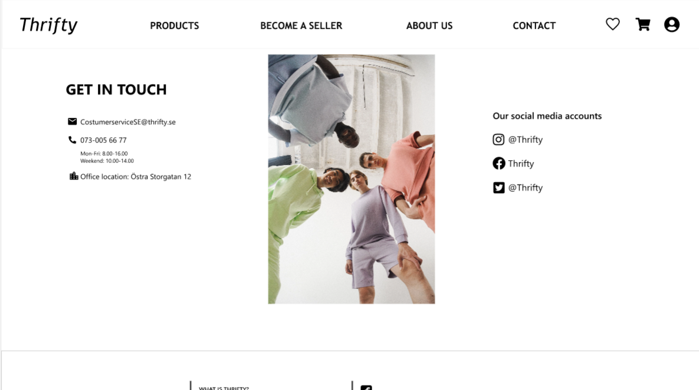

Thrifty is an e-commerce website designed by me and my two classmates Hannah Levander and Linn Benjamin in the course "User Experience Design" at our first year at the New Media Design Programme. The website was created after thorough research and analysis, creation of sitemaps, prototypes, and performing usability tests. This is the final submission after several rounds of iteration and improvements.
View Prototype
